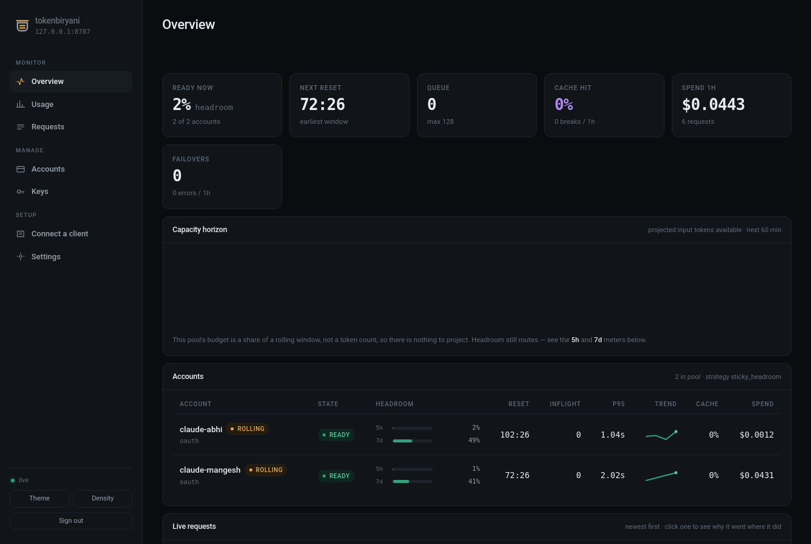
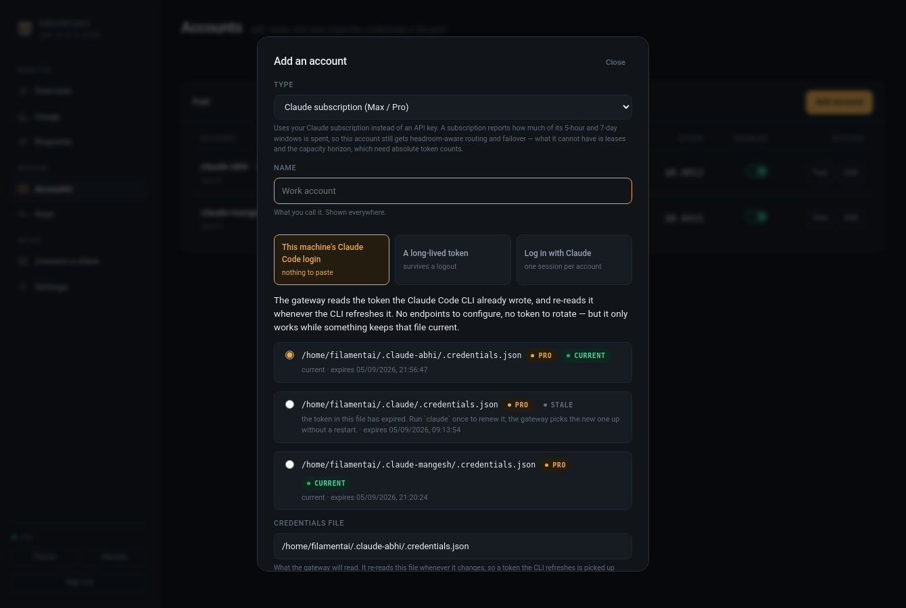
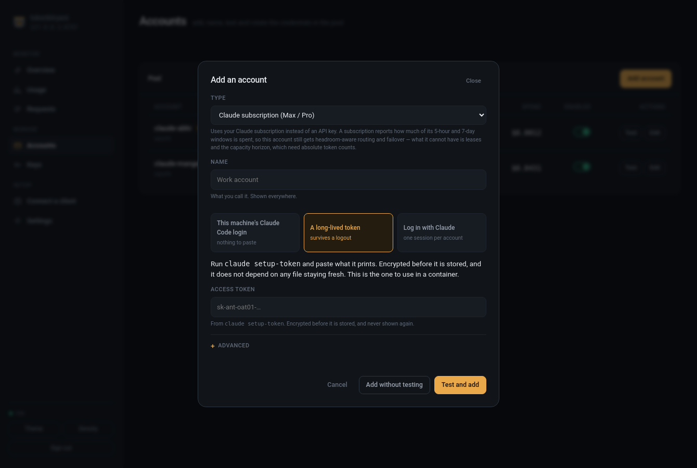
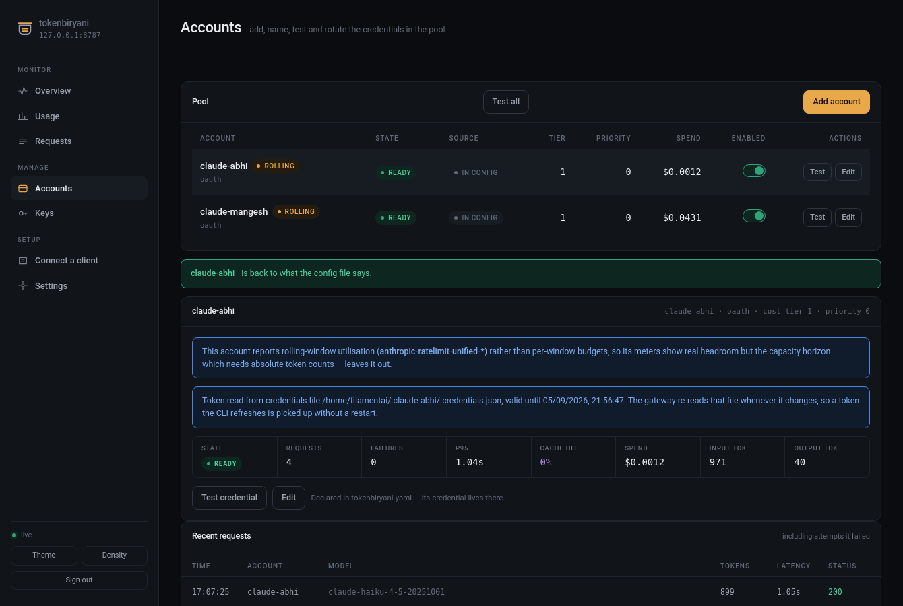

Claude subscription accounts¶
The console can use a Claude subscription (Max or Pro) and pool it alongside API-key accounts. This page covers the three ways to give it a token, what a subscription costs you in routing, and how sessions are kept alive.
Read ADR-0004 for why it is built this way.
Before you turn it on¶
The terms question¶
Anthropic's consumer terms restrict sharing subscription accounts and using them outside the provided interfaces. Pooling several subscriptions so their limits add up is what that is aimed at. The practical risks are yours: account suspension, and for a public deployment, a takedown request.
Routing your own single subscription through your own local gateway is a different thing from pooling several to multiply limits. This gateway cannot tell the difference and does not try to. You know which you are doing.
It costs you some of the routing¶
A subscription does not report the anthropic-ratelimit-{requests,input-tokens,
output-tokens}-{limit,remaining,reset} triples an API key does. It reports a
different thing:
anthropic-ratelimit-unified-5h-utilization: 0.34
anthropic-ratelimit-unified-5h-reset: 1788614400
anthropic-ratelimit-unified-7d-utilization: 0.45
anthropic-ratelimit-unified-status: allowed
How much of each rolling window is spent. The mirror reads those, so 1 - utilization
is real headroom and these accounts route on a measurement rather than a guess. What
they cannot have is anything needing an absolute token count.
| API key account | Subscription account | |
|---|---|---|
| Failover across accounts | yes | yes |
| Prompt-cache affinity | yes | yes |
| Headroom-aware routing | yes | yes — from rolling-window utilisation |
Refusing when the upstream says rejected |
via remaining budget | yes |
| Leases that actually bind | yes | no — a percentage cannot be decremented by 4,000 tokens |
| Admission control (fail fast) | yes | no — same reason |
| Capacity horizon | yes | no — nothing to plot |
| Usage and cost charts | yes | yes — these come from the response body |
| Behaviour when saturated | wait for a known reset | wait for the window reset |

The console draws 5h and 7d meters for these accounts and tags them rolling.
An account that genuinely reports nothing still shows empty meters and a no limits
tag; that is the honest rendering, not a bug.
The middle path worth considering first¶
Mixed pools work. Put the subscription in at cost_tier: 0, your API keys above it,
and run cost_tiered: the router drains the subscription first and spills to API keys
when it is exhausted. Each credential is used the way it is licensed, and the paid
capacity still gets real headroom-aware routing.
Three ways in¶
Accounts → Add account → Claude subscription offers three token sources. The first two need nothing configured.
1. This machine's Claude Code login (default)¶

The gateway reads the token the Claude Code CLI already wrote, and re-reads it whenever the CLI refreshes it — no restart, no endpoints, nothing to paste. The dialog scans for logins and shows which subscription each is and whether it is current:
accounts:
- id: claude-code
name: Claude Code (Pro)
type: oauth
options:
credentials_path: ~/.claude/.credentials.json
GET /admin/oauth/detect is what the dialog calls. It reports the path, the
subscription type, the expiry and whether the file is stale — never the token. It looks
at $CLAUDE_CONFIG_DIR first, then ~/.claude, then every ~/.claude-* profile
directory, then ~/.config/claude.
Name the right profile. CLAUDE_CONFIG_DIR points the CLI at a different directory,
and the file under ~/.claude is then a different account whose token may have
expired weeks ago. The resulting 401 says nothing about which of the two was read, which
is exactly why the scan lists them all with their expiry.
Two accounts on one machine¶
The usual arrangement is a config directory per account, chosen by an alias:
alias claude-abhi='CLAUDE_CONFIG_DIR="$HOME/.claude-abhi" claude'
alias claude-mangesh='CLAUDE_CONFIG_DIR="$HOME/.claude-mangesh" claude'
Both show up in the scan, and each becomes an account naming its own file:
accounts:
- id: claude-abhi
name: claude-abhi
type: oauth
options:
credentials_path: ~/.claude-abhi/.credentials.json
- id: claude-mangesh
name: claude-mangesh
type: oauth
options:
credentials_path: ~/.claude-mangesh/.credentials.json
Each token stays fresh only while its own CLI is used. Keep using both aliases and both stay current; leave one for a day and it lapses — the console says so on the account rather than failing quietly, and running that alias once renews it with no restart.
Read the terms question above before pooling two accounts: it is a different thing from routing one of your own.
The catch: this works only while something keeps that file current. Nothing else uses the CLI on that machine, and the token expires with no one to renew it.
2. A long-lived token¶

claude setup-token # prints a token that outlives a CLI session
Paste it into the dialog. It is encrypted with the same key as every other credential
(store.secret_key_path), stripped from every admin response by name, and depends on
no file staying fresh. This is the one to use in a container.
3. Log in with Claude¶
The gateway runs the OAuth flow itself and holds a session per account, renewing it ahead of expiry. This is what pooling more than one subscription needs — and the only one of the three that needs endpoints configured.
Login is disabled until you configure it, and the console tells you exactly which values are missing rather than failing on the button press.
oauth:
client_id: "" # required
authorize_url: "" # required
token_url: "" # required
redirect_uri: "" # blank = paste the code by hand (see below)
scopes: []
refresh_skew_seconds: 300 # renew this far ahead of expiry
refresh_interval_seconds: 60 # how often sessions are checked
Why these are blank¶
Anthropic does not publish the OAuth endpoints its first-party clients use, and this project has never been run against a real subscription session. A hard-coded guess would look like a working feature and fail in a way no error message could explain, so the gateway refuses to guess.
To fill them in, read them off the client you already trust — the authorize URL your
own Claude login flow opens carries the client_id, and the token endpoint is the one
that URL's documentation or your client's network log names. If a value turns out to
be wrong you get a plain OAuth error (invalid_client, invalid_grant) in the
console, not a mystery.
Redirect or paste¶
- Blank
redirect_uri(default). The provider shows an authorization code; you paste it into the console. This works without registering a callback anywhere, and it is the safer default. - A configured
redirect_uri. Point it athttp://127.0.0.1:8787/admin/oauth/callback. That page displays the code for you to copy — it deliberately does not complete the login itself, because the browser the provider redirects carries no admin key.
Adding an account by logging in¶
- Accounts → Add account, choose Claude subscription (Max / Pro).
- Pick Log in with Claude.
- Give it an ID and a name. The name is what you will see everywhere.
- Log in with Claude opens a tab. Authorize the gateway.
- Paste the code back and finish. The account joins the pool immediately.
Repeat per subscription. Each gets its own session.
What an account says about its own token¶

Each subscription account reports which of the three sources it is using and what that means for it lapsing — a file the CLI keeps current, a long-lived token, or a session the gateway renews. Telling a credentials-file account that "there is no refresh token, so it cannot be renewed" would be true of the third and alarming nonsense for the first.
How sessions are kept alive¶
The gateway renews each session refresh_skew_seconds before it expires, in a
background task. This is what makes pooling more than one subscription possible:
reading a credentials file the Claude CLI keeps fresh covers a single session, and a
gateway holding several has no CLI to lean on.
If a renewal fails, the account is disabled with a reason rather than retried forever. An account that reads "ready" and returns 401 on every request is the outcome worth avoiding. Log in again to replace the session.
Access and refresh tokens are encrypted at rest with the same key as API credentials
(store.secret_key_path, or TOKENBIRYANI_SECRET_KEY). Neither ever appears in an
admin API response — both are stripped by name.
What is still unverified¶
The provider's real OAuth endpoints — source 3 only. Sources 1 and 2 have been run
against a live Pro subscription: anthropic-beta: oauth-2025-04-20 is accepted,
/v1/models and /v1/messages both answer, and the unified headers above are copied
from a real response. The PKCE flow itself is RFC 7636 and is tested against a scripted
token endpoint. See TODO.md.
One thing to know if you write a client of your own against a subscription token: the API expects the caller to identify as Claude Code, which Claude Code itself does. The gateway forwards the body untouched and adds nothing, so a request that works directly works through the pool and one that does not, does not.